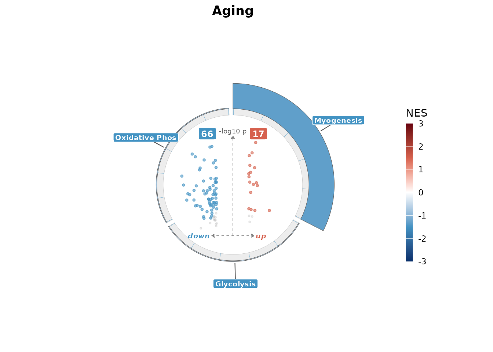

What this package does
enrichVolcano builds one figure with two panels: a
volcano plot of differential abundance results and a ring plot of
pathway enrichment for the same contrast. Input can come from
proteoDA, DEP, limma,
DESeq2, edgeR, MSstats,
proDA, DEqMS, MaxQuant, or Perseus;
ev_validate() auto-detects the format and returns a tidy
long tibble. The hero function enrich_volcano() returns a
patchwork object that you can save with
ggplot2::ggsave() or further compose with other plots.
A 30-second example
Load the bundled YvO (young vs. old skeletal muscle) result set. It ships with the package after install; during development you can read it from the test fixtures.
fixture <- system.file(
"extdata", "examples", "yvo_tidy.rds",
package = "enrichVolcano"
)
if (!nzchar(fixture)) {
fixture <- "../tests/testthat/fixtures/yvo_tidy.rds"
}
yvo <- readRDS(fixture)
yvo <- yvo[!is.na(yvo$gene) & !is.na(yvo$contrast), ]
head(yvo, 3)
#> gene contrast logFC t B P.Value adj.P.Val
#> 1 LMOD2 Aging -2.347025 -4.532596 2.1657602 3.645698e-05 0.001783001
#> 2 MYBPH Aging -2.271899 -4.048600 0.7482425 1.685745e-04 0.004726829
#> 3 ACTN3 Aging -2.120998 -3.211231 -1.6316218 2.227110e-03 0.024142332
#> pi_score sig_pi
#> 1 3.831672e-11 -1
#> 2 2.677030e-09 -1
#> 3 2.369003e-06 -1
unique(yvo$contrast)
#> [1] "Aging" "Interaction" "Training_Old" "Training_Young"The fixture has 1000 protein rows across four contrasts (Aging,
Training_Young, Training_Old, Interaction). Each row already has
logFC, P.Value, and
adj.P.Val.
The default registered databases (hallmark,
reactome, go_bp) fetch from
msigdbr, which needs an internet connection. For a
self-contained example we build a small mock pathway list from the genes
in the fixture.
set.seed(42)
genes <- unique(yvo$gene)
mock_msigdb <- list(
HALLMARK_GLYCOLYSIS = sample(genes, 30),
HALLMARK_OXIDATIVE_PHOS = sample(genes, 25),
HALLMARK_APOPTOSIS = sample(genes, 20),
HALLMARK_MYOGENESIS = sample(genes, 35),
REACTOME_CITRIC_ACID_CYCLE = sample(genes, 15)
)Now call enrich_volcano() with one contrast and the mock
database:
fig <- enrich_volcano(
data = yvo,
contrast = "Aging",
databases = list(mock = mock_msigdb),
enrich_padj = 1,
enrich_mode = "fgsea",
ring = list(max_terms = 5, order_by = "padj",
magnitude = "neg_log_padj", color = "nes"),
volcano = list(label_n = 8, label_by = NULL)
)
#> Warning in prepareStats(stats, scoreType, gseaParam): All values in the stats
#> vector are greater than zero and scoreType is "std", maybe you should switch to
#> scoreType = "pos".
fig
#>
#> ── enrichVolcano ──
#>
#> Call: `enrich_volcano(data = yvo, contrast = "Aging", databases = list(mock =
#> mock_msigdb), enrich_mode = "fgsea", enrich_padj = 1, ring = list(max_terms =
#> 5, order_by = "padj", magnitude = "neg_log_padj", color = "nes"), volcano =
#> list(label_n = 8, label_by = NULL))`
#> Contrasts: 4
#> Proteins: 400
#> Significant pathways (post-dedup): 3
enrich_padj = 1 keeps every pathway in the ring for the
demo; in practice you would use the default 0.05. The
mock_msigdb here stands in for the real Hallmark or
Reactome collections.
Anatomy of the output
The volcano panel maps logFC to the x-axis and
-log10(pi_eq2) to the y-axis. Significance is decided by
p_threshold on the y-column and
logfc_threshold on the x-column; coloured points cross both
cut-offs. The top label_n genes are tagged with
ggrepel.
The ring panel uses ggforce::geom_arc_bar. Each pathway
becomes one arc segment. Arc thickness encodes magnitude
(default -log10(padj)), arc fill encodes color
(default NES). split_by_direction = TRUE puts
up-regulated pathways on the top half-circle and down-regulated ones on
the bottom.
Both panels share the contrast name as a title. The composite is a
patchwork object, which means it supports +,
/, and | operators for further layout.
Two attributes hold the intermediate state:
str(attr(fig, "ev_data"), max.level = 1)
#> List of 4
#> $ validated_input: tibble [400 × 9] (S3: tbl_df/tbl/data.frame)
#> ..- attr(*, "ev_source")= chr "limma"
#> $ pi_scores : tibble [400 × 10] (S3: tbl_df/tbl/data.frame)
#> ..- attr(*, "ev_source")= chr "limma"
#> $ enrichment : tibble [3 × 12] (S3: tbl_df/tbl/data.frame)
#> ..- attr(*, "ev_pathways")=List of 1
#> ..- attr(*, "ev_stats")=List of 1
#> $ dedup_result : tibble [3 × 13] (S3: tbl_df/tbl/data.frame)
#> ..- attr(*, "ev_pathways")=List of 1
#> ..- attr(*, "ev_stats")=List of 1
attr(fig, "ev_call")
#> enrich_volcano(data = yvo, contrast = "Aging", databases = list(mock = mock_msigdb),
#> enrich_mode = "fgsea", enrich_padj = 1, ring = list(max_terms = 5,
#> order_by = "padj", magnitude = "neg_log_padj", color = "nes"),
#> volcano = list(label_n = 8, label_by = NULL))ev_data is a list with four tibbles: the validated
input, the pi-score table, the raw ev_enrich() output, and
the post-dedup enrichment table. ev_call is the literal
match.call(), so a reviewer can re-run the exact figure
from the object alone.
The pipeline under the hood
enrich_volcano() is a thin wrapper over eight exported
functions. Each can be called on its own if you want to step through the
workflow or swap in a custom stage.
-
ev_validate(data)detects the input format and renames columns togene,contrast,logFC,P.Value,adj.P.Val. -
pi_score(data, variant = "eq2")computes the Xiao 2014 pi-score and writes it topi_eq2. -
adjust_p(data, method = "BH")recomputesadj.P.Valfrom the raw p-values within each contrast. -
ev_enrich(data, contrast, databases)runsfgseaandforaagainst the requested pathway sets. -
ev_collapse(enrich, method = "jaccard")removes redundant pathways with overlapping leading-edge gene sets. -
ev_volcano(data, contrast)draws the volcano panel. -
ring_plot(enrich_result, contrast)draws the ring panel. -
ev_compose(volcano_plots, ring_plots)stitches the panels into apatchworkand attachesev_dataandev_call.
Each function is exported because a real analysis often needs to stop
between steps. A common pattern is to compute pi-scores once, write the
table to disk, and re-enter the pipeline at ev_enrich()
with different database choices.
What next
-
vignette("scoring")covers the pi-score variants and the four p-value adjustment methods. -
vignette("pathway-dedup")explains Jaccard collapsing, scope (within vs. across databases), and when to usefgsea::collapsePathwaysinstead. -
vignette("databases")lists the registered gene-set sources and shows how to add a custom GMT. -
vignette("customising")walks through theme overrides, palette swaps, and per-panel ggplot edits. -
vignette("faq")answers questions about MaxQuant ratios, contrast naming, and large figure layouts.